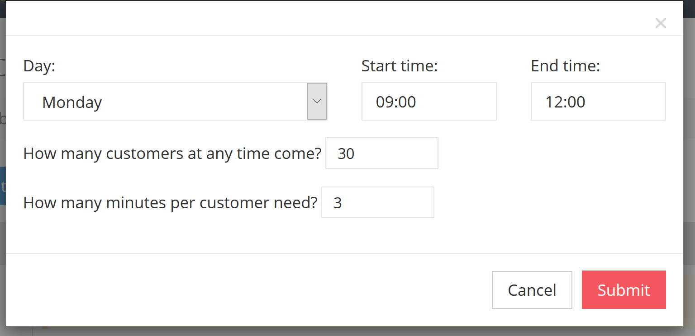
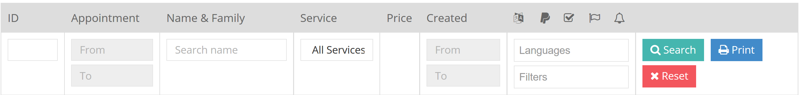

Thank you for purchasing NodAPS. If you have any questions that are beyond the scope of this help file, please feel free to email via my user page contact form here
In this document you will know how work NodAPS, how you can config and manage it. There is 3 section.
After purchase NodAPS and extract main file you have a "NodAPS" folder that it is your system files.
Copy all file and folders from "NodAPS" and paste them in where you want, and just open your URL with your browser.
install.sql file from in your database/nodcms/config/('database' => 'YOUR DATABASE NAME')('username' => 'root')('password' => 'YOUR PASSWORD')
After install, you can access the admin side on this URL www.your-domain.com/admin
username: admin
password: 123456
!IMPORTANT
To use Installer wizard pay attention to below important things:
If you installed NodAPS without error but after installation you see 404 error, please replace bellow code in your .htaccess file in root of your system.
If it doesn’t work, send me your log files with email.
If you already installed and use the previous version of NodUS, please do the below guides.
You have 2 way to upgrade your database:
Copy & paste below MySQL queries in your database. (phpMyAdmin->[Your Database]->SQL)
Copy & replace content of "Update" folder in your system root.
In new version fixed bugs of the previous version and new features is added to the system!
After you install through the admin panel to set the following items.
In settings page you have 5 taps:
As default you have English and German languages for your system. But you can add some new languages or deactive or remove the exsists languages. You can also set your own translate for exsists languages.
In add/edit form you should be carefull to set the fields.
After add a new language you can set the translates for languages (for admin side and customer side)
You should have minimum one provider to work your system.
If you use single-owner system, available just your default provider.
For each provider you can choose some manager with 3 different permissions(Admin, Assistant, Staff) from your user list to mange them.
Admin of the providers can choose some manger for own providers and edit own provider details.
Each provider has own "Dashboard", "Services", "Work Times", "Reservations requests", "Holidays", "Extra Fields" and "Booking Button".
You should define all services that you present to your customer. You can wright name and description in any language that your customers need.
Then set a work program for each service. Setting in this part is as timescales. For any timescales must determine service duration and number of customer. (numebr 0 means unlimited)
For example:
On monday from 9:00 o'clock until 12:00 o'clcock and the duration for this service just 30 minutes that in this 30 minuts, 3 person can together in specific thine use this service.
You can write and add the name and date of this holidays to holiiday's scedule.
It's impossible for customer to catch or reserve an appointment in holidays.
As assumption for every appointemt request, system want customer to fill in the blanks by following. information:
If you need more information from your customer, you can add more fields in this section.
Your extra fields can add in 4 type as require or optional:
| Type name | Value | Min and Max |
|---|---|---|
| Number | The real numbers | Numerical interval |
| Alphanumeric | Numbers and characters | Length interval |
| Text | Numbers, alphabet, special characters and space | Length interval |
| Textarea | It's like "Text" but that show a biger box to customer | Length interval |
| URL | Acepte just website's URLs | - |
| Checkbox | It will show as checkbox to customer | - |
In this page you can define another accounts to managing the system.
You have 2 different member type:
These submenus show you the requests in 2 ways:
In this form you can see the requests on calendar and timeline.
You can edit date and time of them on calendar with drag, drop and resize.
In appointment listing view you can see all appointments in a table list.
There is an advanced search to make your desired report.

You can also validate yor request or send a reminder email for your customers in this form.
By these ways you can you can close, remove, highlight the requests or add a comment on them. The requests comments are just for management usage. (Close means successfull appointment)